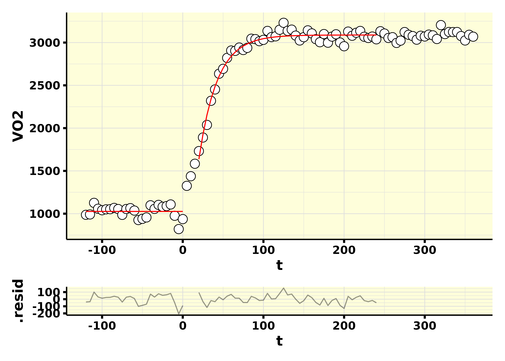

Here you may find a walk-through on how to perform VO2 kinetics analysis in the moderate-intensity domain.
Functions for analysis in the heavy- and severe-intensity domains will be added in the near future.
For making everyone’s life easier, the general function
vo2_kinetics() was created. This function calls smaller
separate functions that fully automate the VO2 kinetics
data analysis. The following interactive tree diagram shows how each
function is called:
Read the data
The first step is to read the raw data with the
read_data() function. Here we are going to use the example
file that comes with whippr, which is a file exported
from the COSMED metabolic cart.
library(whippr)
raw_data <- read_data(path = system.file("example_cosmed.xlsx", package = "whippr"), metabolic_cart = "cosmed", time_column = "t")
raw_data#> # Metabolic cart: COSMED
#> # Data status: raw data
#> # Time column: t
#> # A tibble: 754 × 119
#> t Rf VT VE VO2 VCO2 O2exp CO2exp `VE/VO2` `VE/VCO2` `VO2/Kg`
#> <dbl> <dbl> <dbl> <dbl> <dbl> <dbl> <dbl> <dbl> <dbl> <dbl> <dbl>
#> 1 2 8.08 1.19 9.60 380. 301. 185. 52.9 25.3 31.9 4.58
#> 2 4 23.2 0.915 21.2 864. 665. 141. 40.8 24.5 31.9 10.4
#> 3 8 15.6 2.11 32.9 1317. 1075. 325. 97.2 25.0 30.6 15.9
#> 4 11 20.6 1.18 24.4 894. 714. 188. 49.2 27.3 34.1 10.8
#> 5 14 23.3 0.947 22.1 822. 647. 150. 39.4 26.9 34.1 9.90
#> 6 18 14.7 2.28 33.6 1347. 1126. 351. 108. 24.9 29.8 16.2
#> 7 23 11.2 2.32 26.1 980. 848. 364. 107. 26.6 30.7 11.8
#> 8 28 13.2 2.18 28.8 1147. 981. 336. 105. 25.2 29.4 13.8
#> 9 31 17.7 1.51 26.7 1048. 860. 234. 68.8 25.5 31.0 12.6
#> 10 35 14.2 1.68 23.8 973. 794. 257. 79.3 24.5 30.0 11.7
#> # ℹ 744 more rows
#> # ℹ 108 more variables: R <dbl>, FeO2 <dbl>, FeCO2 <dbl>, HR <dbl>,
#> # `VO2/HR` <dbl>, Load1 <dbl>, Load2 <dbl>, Load3 <dbl>, Phase <dbl>,
#> # Marker <lgl>, FetO2 <dbl>, FetCO2 <dbl>, FiO2 <dbl>, FiCO2 <dbl>, Ti <dbl>,
#> # Te <dbl>, Ttot <dbl>, `Ti/Ttot` <dbl>, IV <dbl>, PetO2 <dbl>, PetCO2 <dbl>,
#> # `P(a-et)CO2` <dbl>, SpO2 <dbl>, `VD(phys)` <dbl>, `VD/VT` <dbl>,
#> # `Env. Temp.` <dbl>, `Analyz. Temp.` <dbl>, `Analyz. Press.` <dbl>, …As you can see in the following graph, this is a protocol where 3 transitions from a baseline exercise intensity to to an exercise intensity below the gas exchange threshold. Therefore, this is a VO2 kinetics test in the moderate-intensity domain. In this specific case, the following was done:
- 3 x 6-min baseline periods at 20 W.
- 3 x 6-min transition periods at the power output associated with 90% of the gas exchange threshold.
library(ggplot2)
raw_data %>%
ggplot(aes(t, VO2)) +
geom_point(shape = 21, size = 3, fill = "white") +
theme_whippr()
Perform the analysis
After reading the raw data, we can move directly to performing the
VO2 kinetics analysis with vo2_kinetics(). This function
will:
- Recognize each baseline and transition phase
- Normalize the first breath in each transition in a safe way to prevent time misalignment
- Recognize outliers
- Remove outliers
- Interpolate each transition
- Time-align the data
- Ensemble-average the transitions
- Perform the chosen bin-average
- Fit the final mono-exponential model from VO2 kinetics from the options chosen
- Calculate residuals
For modeling VO2 kinetics analysis in the moderate-intensity domain, a mono-exponential model is used:
where:
-
VO2(t)= the oxygen uptake at any given time. -
baseline= the oxygen uptake associated with the baseline phase. -
amplitude= the steady-state increase increase in oxygen uptake abovebaseline. -
TD= the time delay. -
τ= the time constant defined as the duration of time for the oxygen uptake to increase to 63% of the steady-state increase.
Important options
In vo2_kinetics() you must set important options before
continuing.
Protocol-related options:
-
protocol_n_transitions= Number of transitions performed. -
protocol_baseline_length= The length of the baseline (in seconds). -
protocol_transition_length= The length of the transition (in seconds).
Data cleaning-related options:
-
cleaning_level= A numeric scalar between 0 and 1 giving the confidence level for the intervals to be calculated during the data cleaning process. Breaths lying outside the prediction bands will be excluded. -
cleaning_baseline_fit= A vector of the same length as the number inprotocol_n_transitions, indicating what kind of fit to perform for each baseline. Either linear or exponential.
Fitting-related options:
-
fit_level= A numeric scalar between 0 and 1 giving the confidence level for the parameter estimates in the final VO2 kinetics fit. -
fit_bin_average= The bin average to be performed for the final fit. -
fit_phase_1_length= The length of the phase I that you wish to exclude from the final exponential fit, in seconds. -
fit_baseline_length= The length the baseline to perform the final linear fit, in seconds. -
fit_transition_length= The length of the transition to perform the final exponential fit, in seconds.
The analysis is performed like the following:
results <- vo2_kinetics(
.data = raw_data,
intensity_domain = "moderate",
vo2_column = "VO2",
protocol_n_transitions = 3,
protocol_baseline_length = 360,
protocol_transition_length = 360,
cleaning_level = 0.95,
cleaning_baseline_fit = c("linear", "exponential", "exponential"),
fit_level = 0.95,
fit_bin_average = 5,
fit_phase_1_length = 20,
fit_baseline_length = 120,
fit_transition_length = 240,
verbose = TRUE
)#> • 14 outliers found in transition 1
#> • 15 outliers found in transition 2
#> • 13 outliers found in transition 3
results#> # A tibble: 1 × 9
#> data_outliers plot_outliers data_processed data_fitted model model_summary
#> <list> <list> <list> <list> <list> <list>
#> 1 <whippr> <patchwrk> <whippr> <tibble> <nls> <tibble [4 × 7]>
#> # ℹ 3 more variables: model_residuals <list>, plot_model <list>,
#> # plot_residuals <list>Fit parameters
Fit parameters and confidence intervals may be accessed through the model_summary column.
results$model_summary[[1]]#> # A tibble: 4 × 7
#> term estimate std.error statistic p.value conf.low conf.high
#> <chr> <dbl> <dbl> <dbl> <dbl> <dbl> <dbl>
#> 1 baseline 1026. 14.3 71.7 1.65e-29 997. 1056.
#> 2 Amp 2062. 11.4 182. 1.95e-62 2039. 2085.
#> 3 TD 12.0 1.04 11.6 1.09e-14 9.93 14.1
#> 4 tau 22.7 1.28 17.7 4.15e-21 20.1 25.3Fit plot
The fit plot may be accessed through the plot_model column.
results$plot_model[[1]]
#> Warning: Removed 24 rows containing missing values or values outside the scale range
#> (`geom_line()`).
#> Removed 24 rows containing missing values or values outside the scale range
#> (`geom_line()`).
Checking what was done during data cleaning
The data cleaning process may be accessed through the plot_outliers column.
results$plot_outliers[[1]]
Model diagnostics
Model residuals plot may be accessed through the plot_residuals column.
results$plot_residuals[[1]]
Additional columns
Raw data with detected outliers
The raw data with additional columns from the data cleaning process may be accessed through the data_outliers column.
results$data_outliers[[1]]#> # Metabolic cart: COSMED
#> # Data status: raw data - outliers detected
#> # Time column: t
#> # VO2 column: VO2
#> # Test type: kinetics
#> # A tibble: 757 × 131
#> t Rf VT VE VO2 VCO2 O2exp CO2exp `VE/VO2` `VE/VCO2` `VO2/Kg`
#> <dbl> <dbl> <dbl> <dbl> <dbl> <dbl> <dbl> <dbl> <dbl> <dbl> <dbl>
#> 1 0 8.08 1.19 9.60 380. 301. 185. 52.9 25.3 31.9 4.58
#> 2 2 8.08 1.19 9.60 380. 301. 185. 52.9 25.3 31.9 4.58
#> 3 4 23.2 0.915 21.2 864. 665. 141. 40.8 24.5 31.9 10.4
#> 4 8 15.6 2.11 32.9 1317. 1075. 325. 97.2 25.0 30.6 15.9
#> 5 11 20.6 1.18 24.4 894. 714. 188. 49.2 27.3 34.1 10.8
#> 6 14 23.3 0.947 22.1 822. 647. 150. 39.4 26.9 34.1 9.90
#> 7 18 14.7 2.28 33.6 1347. 1126. 351. 108. 24.9 29.8 16.2
#> 8 23 11.2 2.32 26.1 980. 848. 364. 107. 26.6 30.7 11.8
#> 9 28 13.2 2.18 28.8 1147. 981. 336. 105. 25.2 29.4 13.8
#> 10 31 17.7 1.51 26.7 1048. 860. 234. 68.8 25.5 31.0 12.6
#> # ℹ 747 more rows
#> # ℹ 120 more variables: R <dbl>, FeO2 <dbl>, FeCO2 <dbl>, HR <dbl>,
#> # `VO2/HR` <dbl>, Load1 <dbl>, Load2 <dbl>, Load3 <dbl>, Phase <dbl>,
#> # Marker <lgl>, FetO2 <dbl>, FetCO2 <dbl>, FiO2 <dbl>, FiCO2 <dbl>, Ti <dbl>,
#> # Te <dbl>, Ttot <dbl>, `Ti/Ttot` <dbl>, IV <dbl>, PetO2 <dbl>, PetCO2 <dbl>,
#> # `P(a-et)CO2` <dbl>, SpO2 <dbl>, `VD(phys)` <dbl>, `VD/VT` <dbl>,
#> # `Env. Temp.` <dbl>, `Analyz. Temp.` <dbl>, `Analyz. Press.` <dbl>, …Processed data
The processed data (cleaned, interpolated, time-aligned, ensemble-averaged, and bin-averaged) may be accessed through the data_processed column.
results$data_processed[[1]]#> # Metabolic cart: COSMED
#> # Data status: processed data - 5-s bin averaged
#> # Time column: t
#> # VO2 column: VO2
#> # Test type: kinetics
#> # A tibble: 145 × 114
#> t Rf VT VE VO2 VCO2 O2exp CO2exp `VE/VO2` `VE/VCO2` `VO2/Kg`
#> <dbl> <dbl> <dbl> <dbl> <dbl> <dbl> <dbl> <dbl> <dbl> <dbl> <dbl>
#> 1 -360 27.4 2.78 76.1 3152. 2831. 421. 146. 24.2 26.9 38.0
#> 2 -355 25.9 2.63 68.7 2781. 2508. 402. 136. 24.8 27.8 33.5
#> 3 -350 24.1 2.32 56.4 2314. 2012. 356. 117. 24.7 28.8 27.9
#> 4 -345 24.0 2.01 49.0 2014. 1786. 306. 104. 24.9 29.0 24.3
#> 5 -340 22.1 2.26 49.8 2085. 1865. 342. 118. 24.2 27.5 25.1
#> 6 -335 20.6 2.25 45.5 1834. 1667. 344. 115. 25.1 27.9 22.1
#> 7 -330 18.4 2.47 45.6 1844. 1704. 376. 130. 24.8 27.3 22.2
#> 8 -325 19.4 2.35 46.6 1786. 1707. 363. 121. 25.9 28.0 21.5
#> 9 -320 20.1 2.00 41.0 1548. 1484. 310. 103. 26.0 27.9 18.7
#> 10 -315 20.3 2.08 42.1 1580. 1517. 324. 106. 26.3 28.2 19.0
#> # ℹ 135 more rows
#> # ℹ 103 more variables: R <dbl>, FeO2 <dbl>, FeCO2 <dbl>, HR <dbl>,
#> # `VO2/HR` <dbl>, Load1 <dbl>, Load2 <dbl>, Load3 <dbl>, Phase <dbl>,
#> # FetO2 <dbl>, FetCO2 <dbl>, FiO2 <dbl>, FiCO2 <dbl>, Ti <dbl>, Te <dbl>,
#> # Ttot <dbl>, `Ti/Ttot` <dbl>, IV <dbl>, PetO2 <dbl>, PetCO2 <dbl>,
#> # `P(a-et)CO2` <dbl>, SpO2 <dbl>, `VD(phys)` <dbl>, `VD/VT` <dbl>,
#> # `Env. Temp.` <dbl>, `Analyz. Temp.` <dbl>, `Analyz. Press.` <dbl>, …Fitted data
The data from the baseline and transition fits may be accessed through the data_fitted column.
results$data_fitted[[1]]#> # A tibble: 70 × 8
#> t VO2 .fitted .resid .hat .sigma .cooksd .std.resid
#> <dbl> <dbl> <dbl> <dbl> <dbl> <dbl> <dbl> <dbl>
#> 1 -120 987. 1026. -39.4 0.0400 72.7 0.0132 -0.562
#> 2 -115 991. 1026. -35.3 0.04 72.7 0.0105 -0.503
#> 3 -110 1126. 1026. 100. 0.04 70.0 0.0849 1.43
#> 4 -105 1058. 1026. 31.6 0.04 72.8 0.00845 0.450
#> 5 -100 1040. 1026. 14.0 0.04 73.1 0.00165 0.199
#> 6 -95 1051. 1026. 24.6 0.04 72.9 0.00511 0.350
#> 7 -90 1052. 1026. 26.2 0.04 72.9 0.00582 0.374
#> 8 -85 1068. 1026. 41.3 0.04 72.6 0.0145 0.589
#> 9 -80 1054. 1026. 27.7 0.04 72.9 0.00648 0.394
#> 10 -75 986. 1026. -40.1 0.04 72.6 0.0136 -0.572
#> # ℹ 60 more rowsModel
The model used for fitting the mono-exponential model may be accessed through the model column.
results$model[[1]]
#> Nonlinear regression model
#> model: VO2 ~ 1026.23750312602 + Amp * (1 - exp(-(t - TD)/tau))
#> data: data_transition
#> Amp TD tau
#> 2062.08 12.02 22.71
#> residual sum-of-squares: 145152
#>
#> Number of iterations to convergence: 6
#> Achieved convergence tolerance: 1.49e-08
summary(results$model[[1]])
#>
#> Formula: VO2 ~ 1026.23750312602 + Amp * (1 - exp(-(t - TD)/tau))
#>
#> Parameters:
#> Estimate Std. Error t value Pr(>|t|)
#> Amp 2062.079 11.361 181.51 < 2e-16 ***
#> TD 12.021 1.036 11.61 1.09e-14 ***
#> tau 22.712 1.281 17.72 < 2e-16 ***
#> ---
#> Signif. codes: 0 '***' 0.001 '**' 0.01 '*' 0.05 '.' 0.1 ' ' 1
#>
#> Residual standard error: 58.79 on 42 degrees of freedom
#>
#> Number of iterations to convergence: 6
#> Achieved convergence tolerance: 1.49e-08Residuals data
The model residuals data may be accessed through the model_residuals column.
results$model_residuals[[1]]#> # A tibble: 45 × 7
#> t VO2 .fitted .resid standardized_residuals sqrt_abs_standardized_re…¹
#> <dbl> <dbl> <dbl> <dbl> <dbl> <dbl>
#> 1 20 1731. 1637. 94.3 1.60 1.27
#> 2 25 1890. 1924. -33.6 -0.572 0.757
#> 3 30 2037. 2154. -117. -1.98 1.41
#> 4 35 2319. 2339. -19.3 -0.328 0.573
#> 5 40 2452. 2487. -34.7 -0.591 0.769
#> 6 45 2636. 2606. 30.3 0.516 0.718
#> 7 50 2693. 2701. -8.09 -0.138 0.371
#> 8 55 2820. 2778. 43.0 0.731 0.855
#> 9 60 2907. 2839. 68.2 1.16 1.08
#> 10 65 2903. 2888. 14.9 0.253 0.503
#> # ℹ 35 more rows
#> # ℹ abbreviated name: ¹sqrt_abs_standardized_residuals
#> # ℹ 1 more variable: lag_residuals <dbl>